Janeiro
O seu objetivo é chamar a atenção da humanidade para as questões e necessidades relacionadas à Saúde Mental e Emocional das pessoas. Porque foi escolhido janeiro para essa campanha? Pois no primeiro mês do ano, em termos simbólicos e culturais, as pessoas estão mais propensas a pensarem em suas vidas, em suas relações sociais, em suas condições de existência, em suas emoções e em seus sentidos existenciais.
Fevereiro
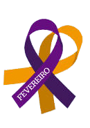A cor Roxa foi escolhida para a conscientização do Lúpus, da Fibromialgia e do Mal de Alzheimer. A cor Laranja foi incluída na campanha para conscientizar um dos tipos mais graves de câncer, a Leucemia.
• Lúpus Ele afeta principalmente mulheres, sendo 9 em 10 pacientes com o risco mais elevado durante a idade fértil. • Fibromialgia De cada 10 pacientes, sete a nove são mulheres. • Alzheimer No Brasil, existem cerca de 15 milhões de pessoas com mais de 60 anos de idade. Seis por cento delas têm a doença de Alzheimer, segundo dados da Associação Brasileira de Alzheimer (Abraz). • Leucemia Instituto Nacional do Câncer (INCA) apontam que em 2019 a leucemia teve mais de 10 mil novos casos. Os sintomas incluem anemia, palidez, sonolência, fadiga, palpitação, manchas roxas na pele ou pontos vermelhos, bem como gânglios linfáticos inchados, perda de peso, febre e dores nas articulações e ossos.Março
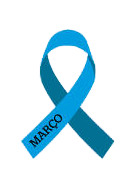O Março Azul traz o debate sobre a prevenção ao câncer colorretal. Principais fatores de risco que favorecem o surgimento do câncer colorretal: Sedentarismo; Obesidade; Ingestão excessiva de alimentos gordurosos e industrializados; Consumo de álcool excessivo; Consumo de alimentos defumados, carne vermelha. Pouca ingestão de frutas, grão e legumes; Tabagismo. Sintomas que merecem atenção Emagrecimento sem motivo Sangue nas fezes Anemias de repetição Cansaço e indisposição sem razão Mudanças nos hábitos intestinais sem motivo (diarreia frequente ou constipação)
Abril
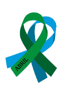Abril Verde significa a conscientização sobre a importância da segurança no trabalho. O mês também é chamado de Abril Azul para trazer o debate sobre o autismo, que tem a data 02.04 como o Dia Mundial da Conscientização do Autismo.
Maio
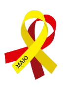Maio Amarelo: reacende o debate sobre a prevenção de acidentes de trânsito.
Maio Vermelho: trata-se de uma campanha alusiva ao Dia de Combate ao Câncer Bucal
Maio roxo: O objetivo é alertar as pessoas sobre doenças inflamatórias intestinais.
Junho
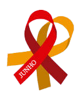Junho Vermelho A campanha foi criada pelo movimento Eu Dou Sangue, em 2011. No dia 14 de junho é celebrado o dia Mundial do doador de Sangue, por isso a escolha desse mês para conscientizar sobre a importância da doação. A cor vermelha foi escolhida, logicamente, porque é a cor do sangue. Junho Laranja A iniciativa foi criada pelo movimento Eu Sou Sangue, em 2011, e alerta para a anemia e a leucemia.
Julho
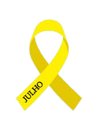 Julho é o mês da conscientização de hepatites virais e câncer ósseo. O mês foi escolhido pelo Ministério da Saúde e pelo Comitê Estadual de Hepatites Virais. A cor foi escolhida por ser o tom que os olhos dos infectados geralmente ficam quando a doença se manifesta, no fígado.
Agosto
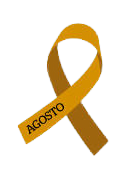O Agosto Dourado é o mês de informação sobre o aleitamento materno, que, inclusive, tem os dias entre 01 a 07 de agosto como a Semana Mundial da Amamentação mil brasileiros
Setembro
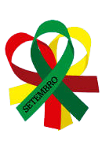Setembro Amarelo: O mês é marcado pela campanha de Combate ao suicídio
Setembro Verde: O objetivo é conscientizar sobre doação de órgãos.
Setembro Vermelho: No dia 29 de setembro é comemorado o Dia Mundial do Coração. Então, o mês também busca alertar sobre doenças cardiovasculares.
Outubro

Sendo o mês mais divulgado e conhecido por todos, o Outubro Rosa é dedicado à conscientização sobre o câncer de mama, foi criado nos Estados Unidos na década de 1990.
Novembro
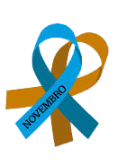O mês de novembro também é bastante conhecido por ser o mês azul, de combate ao câncer de próstata e ao diabetes. O mês também tem a cor dourada, em referência à conscientização sobre o câncer infanto-juvenil.
dezembro
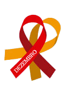O mês de dezembro também tem mais de uma cor, o vermelho e o laranja. O Dezembro Vermelho ressalta a importância da prevenção contra a AIDS, e o Dezembro Laranja traz o debate sobre o combate ao câncer de pele.
Entre em contato
Endereço
Paraná - PR
gabekw@hotmail.com